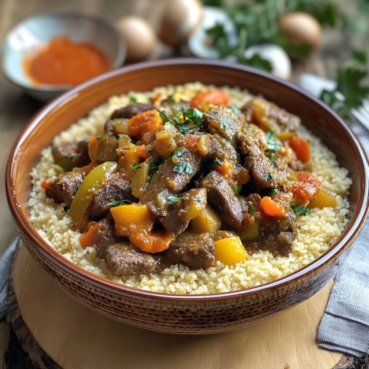

Couscous (Afrique du Nord) – Semoule de blé accompagnée de légumes et de viande 🍽
Ingrédients :
- 500 g de semoule de blé
- 300 g de viande d'agneau ou de poulet
- 3 carottes coupées en dés
- 2 courgettes tranchées
- 200 g de pois chiches
- 1 oignon émincé
- 2 tomates coupées en dés
- 1 cuillère à soupe de concentré de tomate
- Épices : ras el hanout, cumin, coriandre
- 500 ml d'eau
- Huile d'olive, sel et poivre
Instructions :
- 1. Faire revenir la viande avec l'oignon et les épices dans l'huile.
- 2. Ajouter les tomates, le concentré de tomate et laisser mijoter 10 min.
- 3. Incorporer les légumes et les pois chiches, verser l'eau et laisser cuire 40 min.
- 4. Préparer la semoule à la vapeur et égrainer avec un peu d'huile d'olive.
- 5. Servir chaud avec la viande et les légumes.